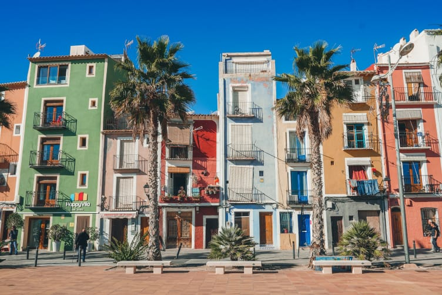
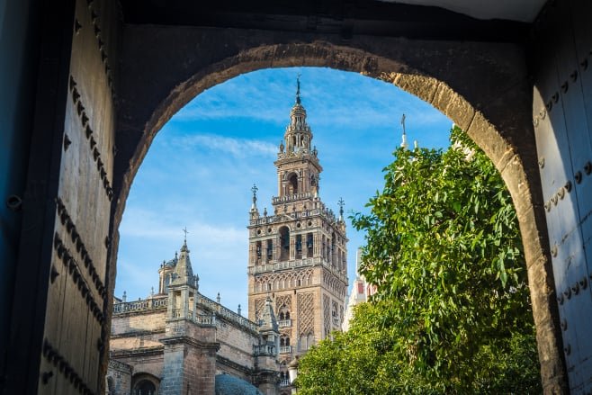
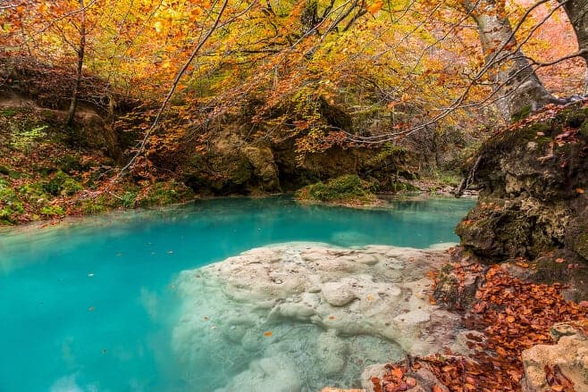
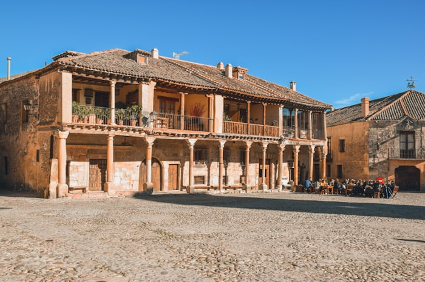
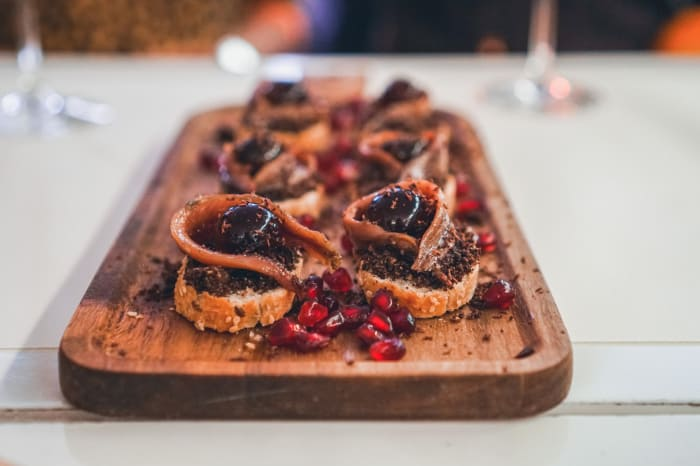

El Elogio del Horizonte, uno de los mejores lugares que ver en Gijón
Gijón, además de ser la ciudad más poblada de Asturias, me atrevería a decir que es la ciudad con más
carisma de las tres grandes urbes del paraíso natural. Además de presumir de tener una de las playas
urbanas más bonitas de España, la gente es tan entrañable que te tratarán como a un fíu. Por no hablar
de lo bien que se come en Gijón.

20 Lugares que ver en Villajoyosa y alrededores
Me encantan los pueblos costeros del Mediterráneo y Villajoyosa es uno de los más especiales.
No hay duda de que la seña de identidad del pueblo son sus casas de colores. ¡Son literalmente
de cuadro! Pero no todo son pintorescas casas en Villajoyosa, el casco histórico es muy coqueto
y esta zona goza de mucho patrimonio y una gastronomía envidiable.

Qué ver en Sevilla: 11 lugares imprescindibles
Sevilla es una de mis ciudades favoritas de España. Monumental, histórica y preciosa.
Para que te guste la ciudad tanto como a mí y estés más contento que unas castañuelas he
preparado esta guía con los mejores lugares que ver en Sevilla en un día o un fin de semana para
que salga todo rodado. ¡Espero que disfrutes de la ciudad al máximo!

Las 7 mejores escapadas por España para el otoño
Lo siento chicos, pero ya ha acabado octubre. Media España ha estado de puente estos días salvo
cuatro pringados como nosotros. Sé que estás un poco de bajón y lo peor de todo es que las noticias
no son muy alentadores: ya está aquí noviembre, ese mes que es un poco "regulero". Aún quedan dos meses
para Navidad, los días son más cortos, miras el calendario y no ves festivos a la vista y te sientes
realmente jodido.

5 Lugares preciosos que ver en el pueblo de Pedraza
De Pedraza dicen que es el pueblo más bonito de Segovia y la verdad es que yo no voy a negar lo contrario.
Es más, corroboro alto y claro que fue el pueblo que más me gustó de toda la provincia. Un pueblo de sabor medieval,
con calles empedradas, con típicas casonas castellanas con floridos balcones y un encanto que enamorará a todos
los viajeros que lo visitan.

Dónde comer en Burgos: los 8 mejores restaurantes
Hablar de Burgos es hablar de su increíble patrimonio, como su Catedral gótica que es una de las maravillas de Castilla.
También del Cid y de Atapuerca. O de Miguelón, el cráneo más famoso encontrado en este yacimiento, que curiosamente murió
por una infección en la boca. Y es que está claro que no se alimentó tan bien como yo en mi última visita gastronómica a Burgos.